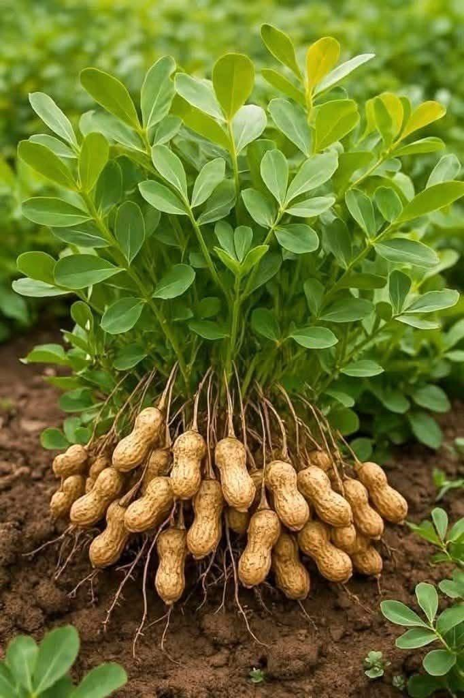

L’arachide est une culture très importante, particulièrement en Afrique de l’Ouest. Elle pousse dans des sols légers et bien drainés, sous un climat chaud et ensoleillé. Sa culture demande un entretien régulier afin d’assurer une bonne production. La récolte se fait généralement 3 à 5 mois après le semis, lorsque les gousses sont bien développées. Riche en protéines, en bonnes graisses et en vitamines, l’arachide est consommée grillée, transformée en huile, en pâte d’arachide ou utilisée dans de nombreuses recettes.